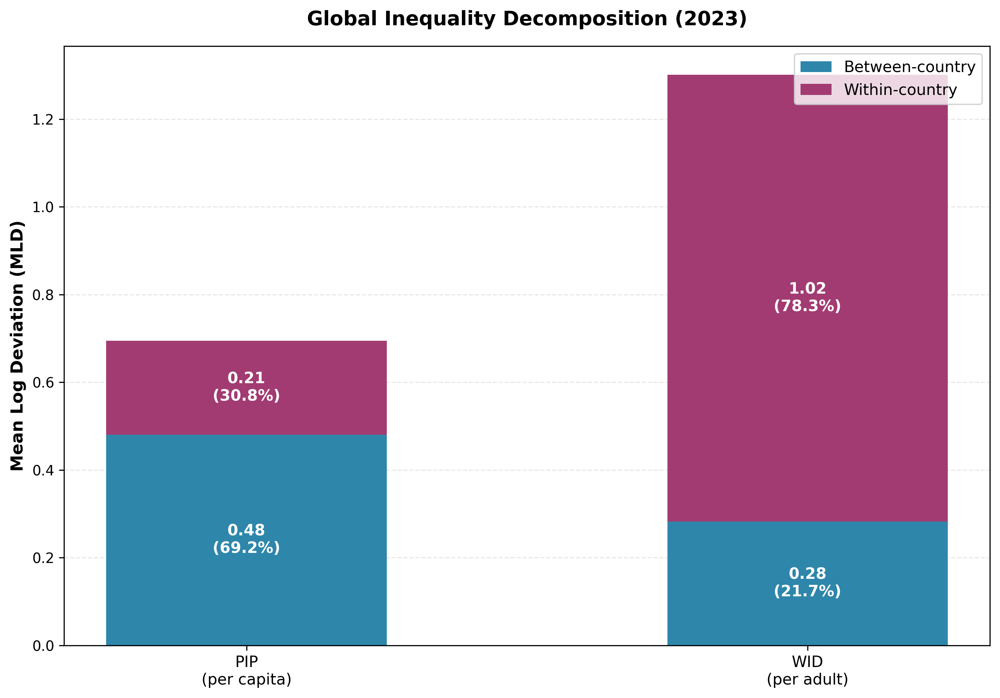

An investigation into the composition of global income inequality

There are two major sources of global data on incomes: WID and PIP. They tell very different stories about the nature of global income inequality.